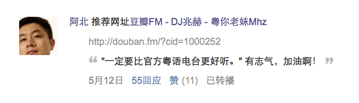

豆瓣上周开通了DJ兆赫，个人用户可以申请。其实就是个精选集一样的东西，只不过寄托在豆瓣fm的平台上显得高档一点。我随手申请了一个，加了点粤语歌就上线了。 我的兆赫收听地址：http://douban.fm/?cid=1000252
周末没怎么管，周一忽然发现我们的兆赫竟然上了首页，百思不得其解，于是在豆瓣上发了条得瑟广播。结果有一位朋友过来说：不错，阿北都表扬了。我抱着怀疑的心态去搜了搜阿北的页面，发现果然之前推荐了一下，真是没想到。特地截图留念——豆瓣CEO寄语我们DJ兆赫。为了表示感谢，我抽空把之前几年在虾米网搜集的粤语歌单搬了过来。不过说实话，虽然已小有成绩，但其实不会为了收听量而去花太多时间维护，那不是我们的作风。只是以后听到好的粤语歌就随手收在这好了。
事情还没完，最近似乎人品爆发？除了之前阿北推荐，今天在微博上神婆黄夕倍忽然关注我了，很高兴。同事说你是不是捡钱包了？我说：别那么俗了，精神上的富足也很快乐。相对于捡钱包，我还是挺容易满足的，这些个小事都能兴奋一阵。
